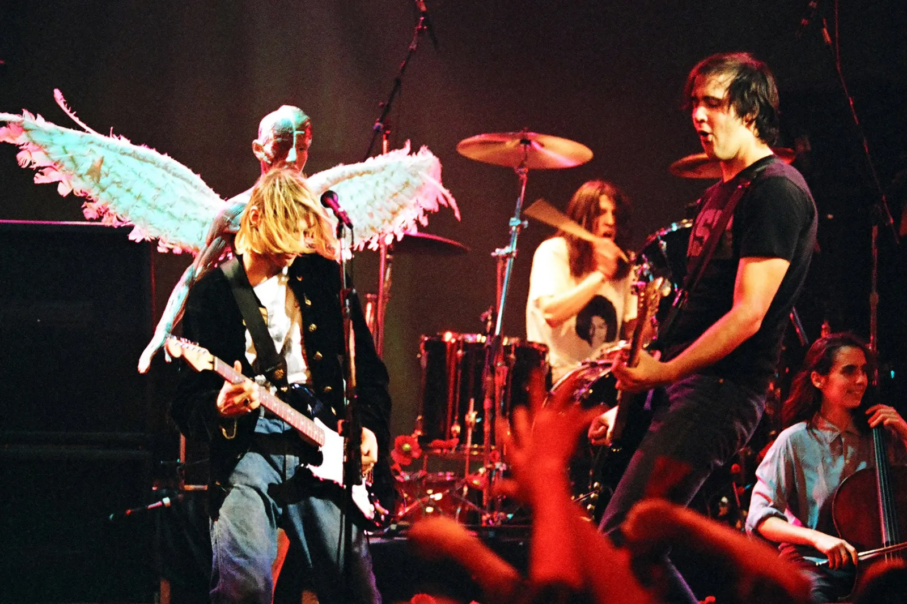
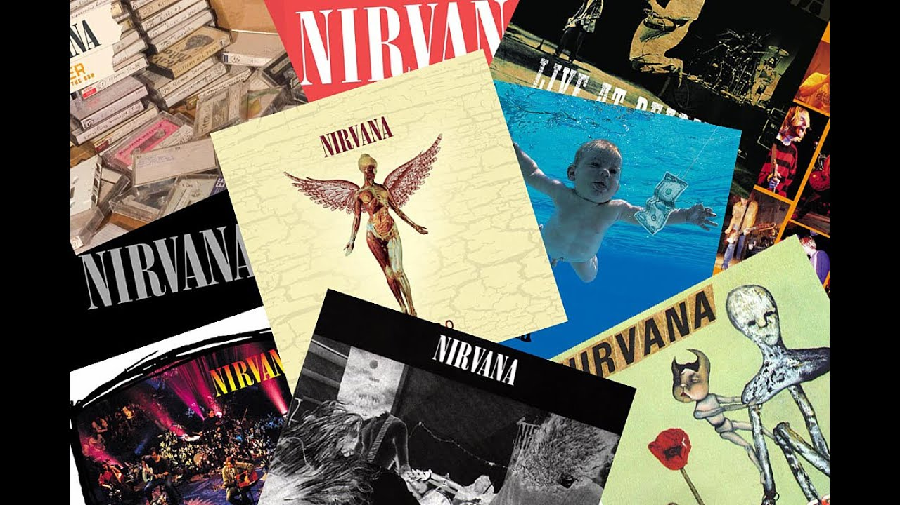

Нирвана — американская рок-группа, основанная в Абердине, штат Вашингтон, в 1987 году. Это была одна из самых влиятельных групп 1990-х годов, чьё культовое звучание определило эпоху гранжа.
Музыка Нирваны известна своей сырой энергией, эмоциональной глубиной и инновационным сочетанием панк-рока и мелодичного попа. Группа сыграла ключевую роль в подъеме альтернативного рока и гранжа, вдохновляя бесчисленное количество музыкантов и фанатов по всему миру.
Хотя группа распалась после трагической смерти Курта Кобейна в 1994 году, музыка Нирваны продолжает резонировать. Их влияние выходит за рамки музыки, формируя культурные установки и вдохновляя движения, которые ставят во главу угла аутентичность и эмоциональное выражение.
Их музыка разрушила барьеры, приведя альтернативный рок в мейнстрим и проложив путь для нового поколения артистов. Способность Нирваны передавать сырые эмоции через свои тексты и звук остается непревзойденной, обеспечивая им место среди величайших групп в истории рока.
Откройте для себя историю, музыку и влияние Нирваны через разделы выше.